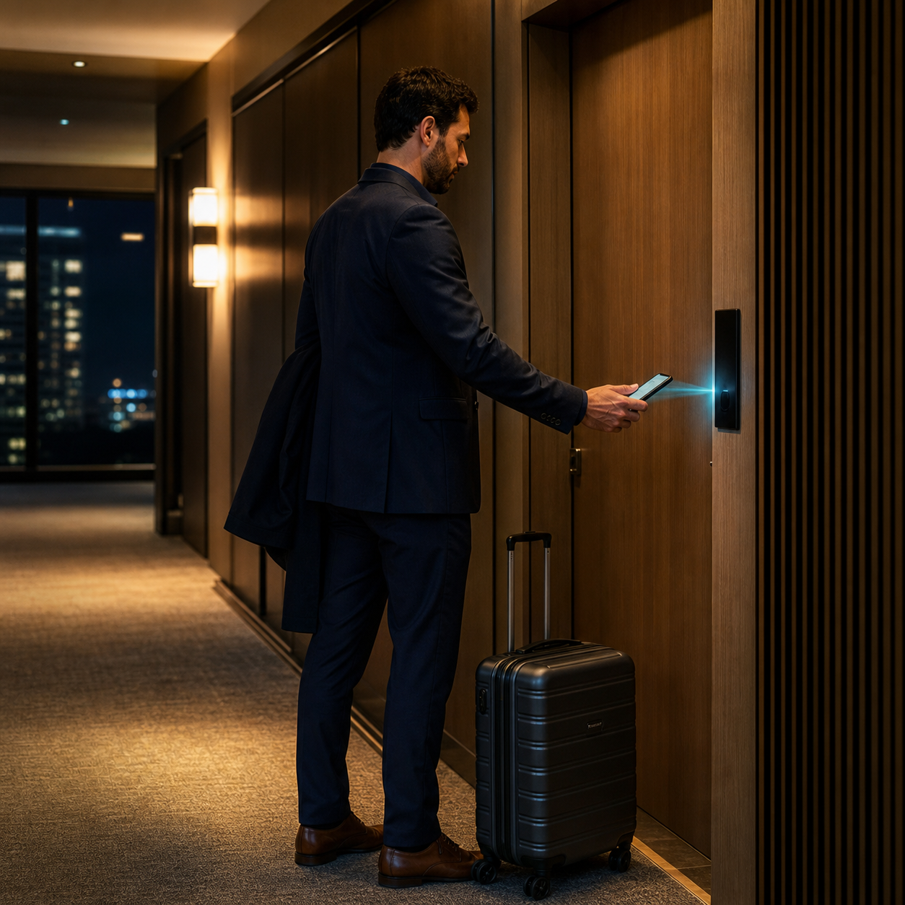

智慧入住與自助服務
從自助報到、行動鑰匙到櫃台流程，觀察科技如何縮短等待與提升服務品質。
Series / Hotel Tech
從入住、通行、客房服務到退房，觀察科技如何讓旅宿體驗更順、更安全，也更有溫度。
What We Follow
從自助報到、行動鑰匙到櫃台流程，觀察科技如何縮短等待與提升服務品質。
整理智慧門鎖、客房控制、能源管理與旅客安全相關案例。
看 AI 如何協助回覆、導覽、推薦與營運管理，同時保留服務裡的人味。
Latest Story

2026.06.21 / Published
行動鑰匙與智慧門禁的選型，重點不只是品牌，而是 PMS 串接、現場斷網備援、門鎖改裝成本、旅客操作方式、安全維護與權限管理能不能接成一條穩定流程。

2026.06.21 / Published
對許多旅館與民宿來說，自助入住不一定要從大型 kiosk 開始。iPad 自助櫃檯可結合 Cellbedell 自助發卡機與邊緣運算，從硬體、空間、維護與部署彈性降低導入門檻。

2026.06.21 / Published
AI 訪客管理不只是登記姓名，而是把訪客、住客、員工與臨時通行權限變成可追蹤的流程，讓旅館、商辦與共享空間更容易管理前台與門禁。

2026.06.20 / Published
智慧入住的重點不只是少一個櫃台，而是用隨插即用架構、PMS API 串接、邊緣運算與斷網自主化，把旅客抵達前後的通行、付款與服務任務整理成更順的體驗。
Upcoming
後台新增並發布文章後，這裡會自動更新文章列表。